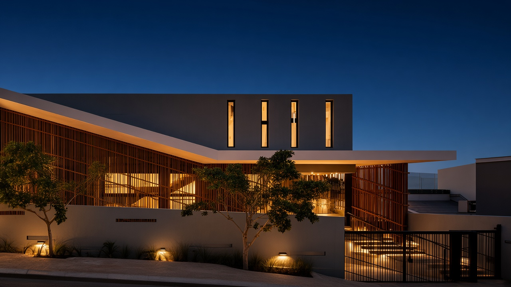
Plate 01
New Delhi · Est. 2014
GN Architects, formerly Guru Nanak Architects, practices architecture and interiors in New Delhi. The work is concerned with light, material, and the long life of a room.
View the work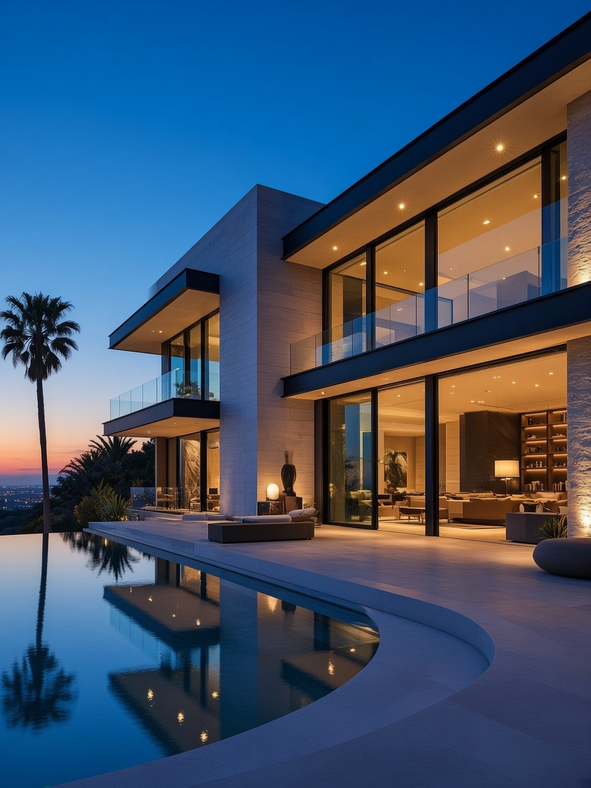
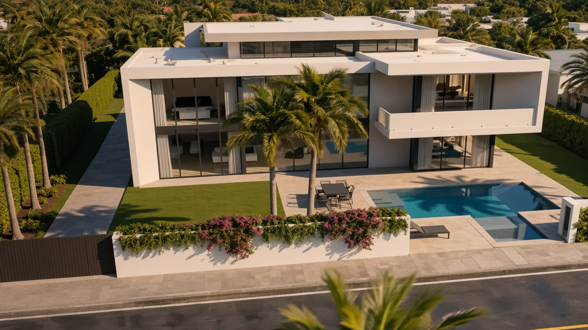
Sheet 02 · The line becomes the building
Portfolio plates
Placeholder photography

Plate 01
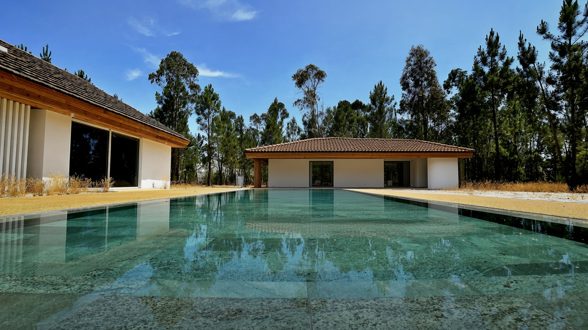
Plate 02
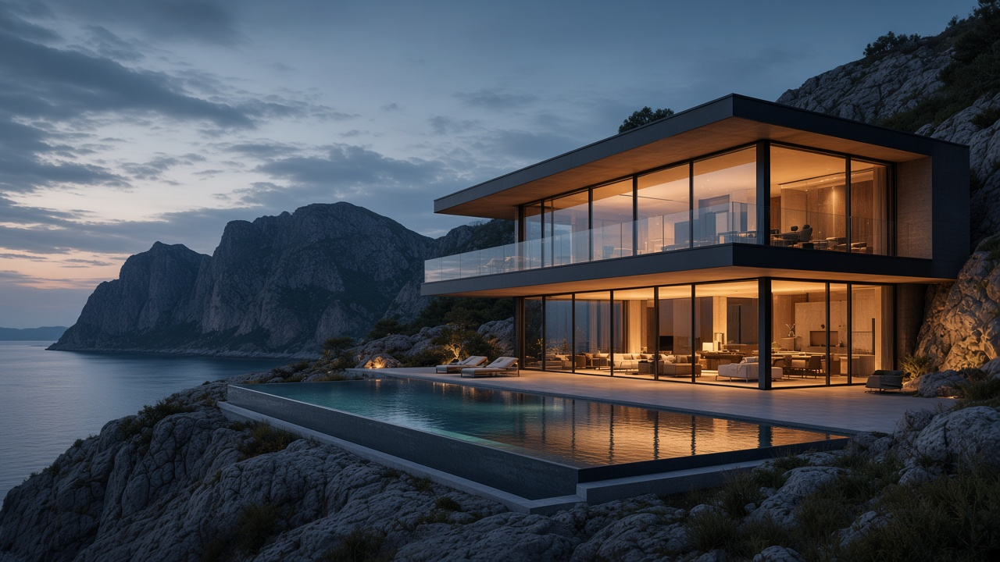
Plate 03
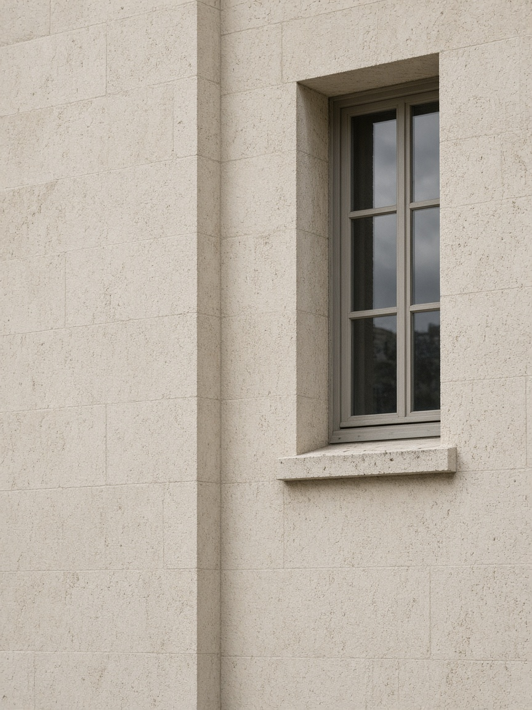
Plate 04
Architecture begins where emotion meets function.
The studio
The practice was established in 2014 and was formerly known as Guru Nanak Architects. It works across residential architecture, interiors, commercial architecture, and planning in Delhi NCR.
A plan is finished when the light, the material, and the way a person moves through the room agree.
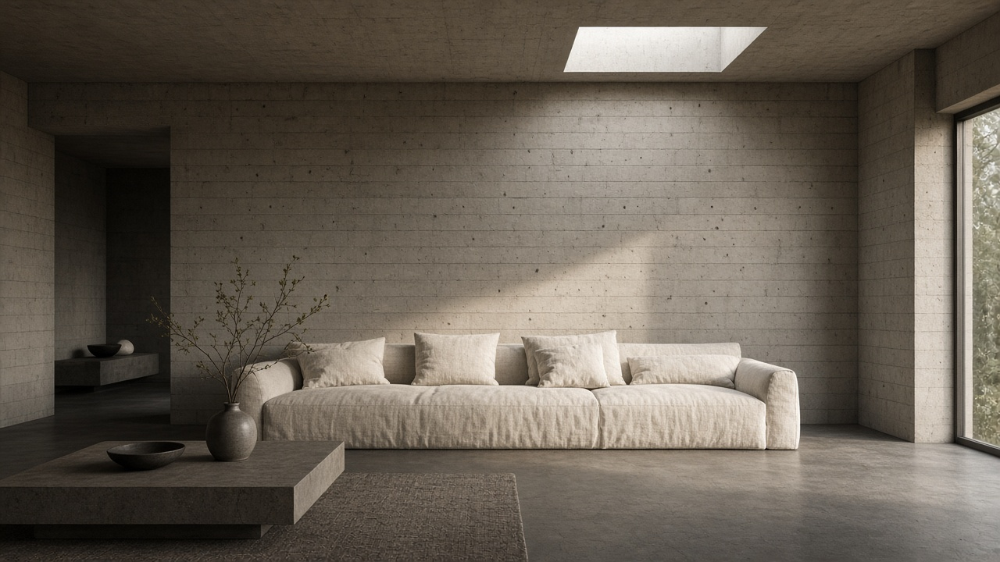
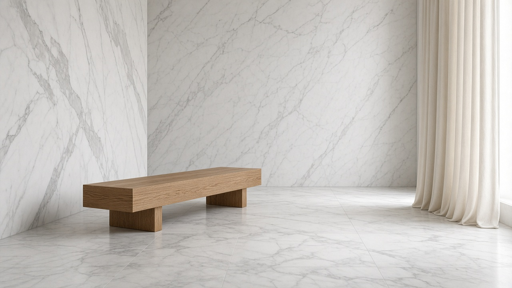
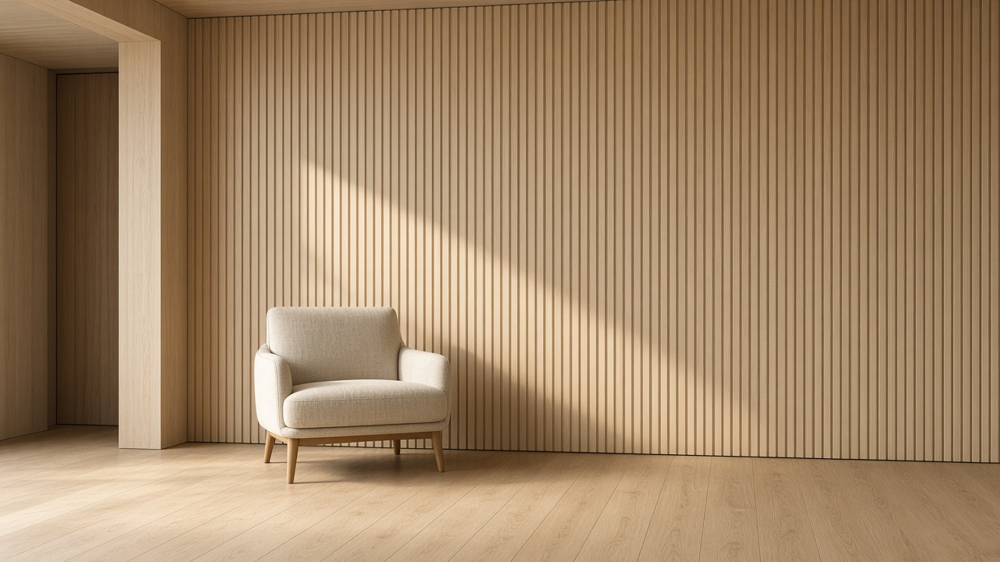
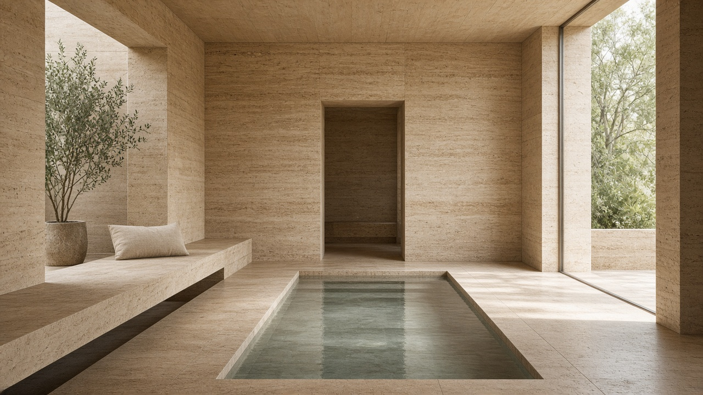
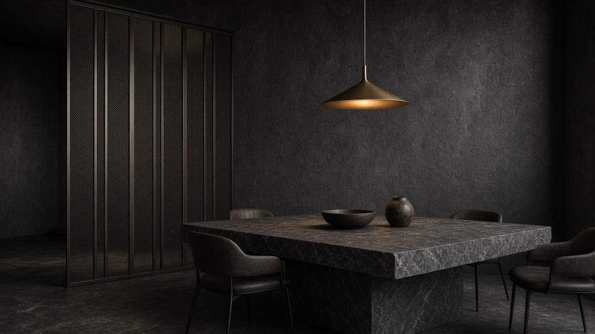
Finishes
Board-formed. The mould stays visible.
Process
01 Sketch
The plot is walked. The brief is written in plain language.
02 Concept
Two or three ways the building can sit, tested in plan and section.
03 Visualization
A model used to decide proportion, not to decorate the presentation.
04 Execution
Drawings that can be built, reviewed while the work can still be corrected.
05 Completion
The last sample is checked. The room is handed over as it was drawn.